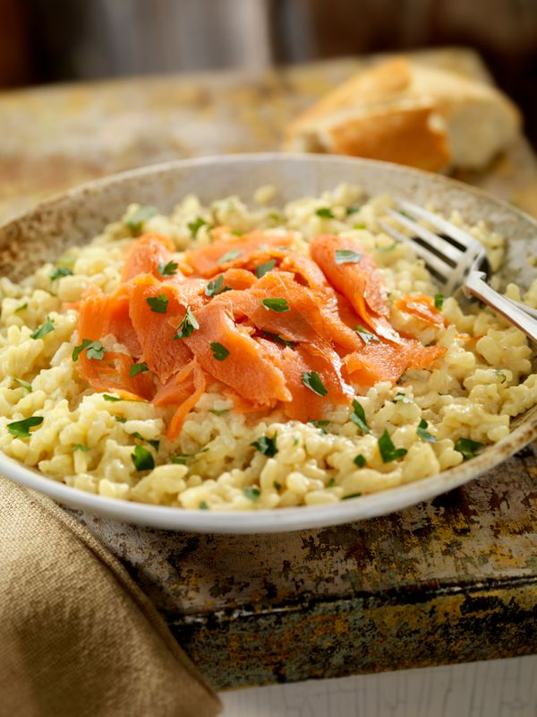

Recette de Risotto au Saumon

Description
Le risotto au saumon et crème au parmesan combine un riz onctueux avec des morceaux de saumon fondant, le tout enrobé
d'une sauce généreuse au parmesan. Cette recette facile transforme des ingrédients simples en un plat réconfortant
qui impressionne à tous les coups. Parfait pour un dîner en famille ou entre amis, ce risotto crémeux met tout le
monde d'accord.
Ingredients
- 40g de beurre
- 1 poireau
- 1/4 cuillere a cafe de curcuma ou 1 dosette de safran
- 40g de beurre froid supplementaire ou 4 cuilleres a soupe de creme fraiche (au choix)
- 1 cuillere a cafe d'aneth
- poivre blanc
- sel
- 150g de saumon fume
- 15cl de vin blanc
- 0.5l de bouillon do volaille (3cubes environ)
- 400g de riz pour risotto
- 2 gousses d'ail
- 40g de parmesan
- 1 cuillere a cafe de citron
Etapes
- Préparer le bouillon de volaille.
- Faire revenir le poireau lavé et émincé avec l'ail et 40 g de beurre, à feu doux pendant environ 10 mn, jusqu'à ce
que le poireau commence à fondre (utiliser une casserole ou un wok qui n'accroche pas).
- Ajouter le riz et le curcuma, faire revenir jusqu'à ce que les grains deviennent translucides.
- Ajouter le vin blanc, remuer et laisser s'évaporer complètement.
- Mouiller avec une louche de bouillon et verser le reste en plusieurs fois en remuant régulièrement jusqu'à ce que le
riz soit cuit (le riz doit être fondant et légèrement ferme à la fois). Saler en cours de cuisson si nécessaire (le
bouillon étant déjà salé je ne le conseille pas).
- En fin de cuisson, rajouter la crème fraîche ou le beurre froid ainsi que le parmesan, remuer doucement.
- Juste avant de servir rajouter le poivre, les lanières de saumon, l'aneth et les zestes de citron (le saumon ne doit
pas cuire!). Servir aussitôt car le risotto n'est pas très bon réchauffé !!!
Retour a l'Accueil